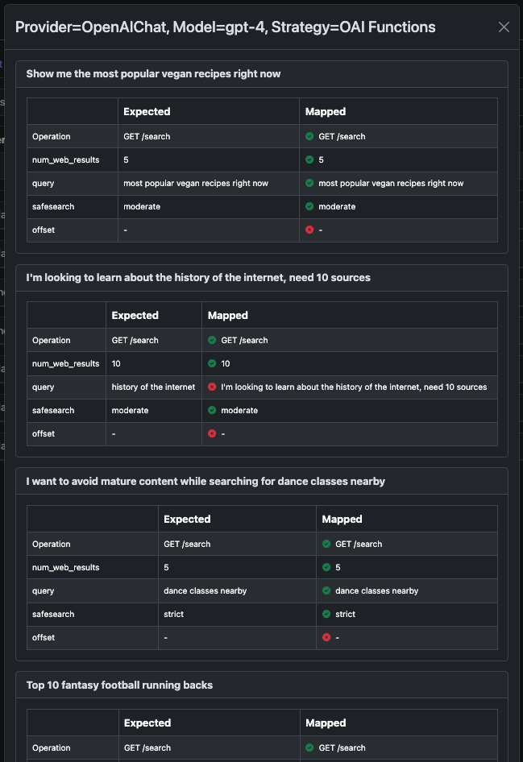

Building & Running OpenPlugins#
This tutorial describes the steps to build, test, share, and monitor your OpenPlugins.
It assumes you are comfortable with REST APIs and Swagger documentation. It also assumes you are familiar with large language models (LLMs) such as ChatGPT. Most importantly, it assumes that you understand the API that your plugin calls. It is highly recommended that you test your desired endpoints using a tool such as Postman before attempting to build a plugin.
For brevity and to avoid confusion with OpenAI, this tutorial uses the term “Swagger” even when referring to the OpenAPI specification.
Generate an OpenPlugin#
The OpenPlugin document is your primary means for modifying your plugin. It is a JSON document which contains essential documentation about your plugin, as well as configuration for mapping natural language to API calls.
From the app homepage, select “Builders” from the menu and choose the Plugin Builder option. This will bring you to the Plugin Builder page. To begin creating your new plugin, click the New Plugin button and use the modal to generate your plugin.
You have three options for generating your plugin:
Paste API documentation
Create from a Swagger URL or file
Create from the ChatGPT Plugin Manifest file
Paste API Documentation#
You can copy and paste API documentation into the text box to generate both a Swagger document and an OpenPlugin document for the API. You can optionally provide instructions to help the LLM more accurately interpret the provided text.
If the LLM cannot generate your plugin from the provided documentation, try reducing the number of documented endpoints. You can always add more operations after your plugin has been generated. Revising the text input’s formatting may also help the LLM understand the API.
Create from a Swagger URL or file#
You may be able to find a Swagger document for your desired API online. You can provide a URL or upload a local file to generate an OpenPlugin document.
Create from the ChatGPT Plugin Manifest file#
ChatGPT Plugin Manifest files will be available for APIs which have already built plugins on the OpenAI platform. You can provide a url to the manifest or upload a local file to generate your plugin.
Give it a description#
After your plugin has been generated, you can use fields in the Plugin tab to provide information about your plugin.
Name: The name of your plugin. This is the title other users will see when they search for your plugin.
Description: A short description of your plugin. This will help users understand what your plugin does.
Logo URL: A URL to an image to display for your plugin.
Contact Email: An email address for users to contact when they have questions about your plugin.
Legal Info URL: A URL to a page with legal information about your plugin.
Plugin Selector Helpers: Use cases for your pluging. This will help the LLM select your plugin more accurately. You can provide multiple use cases by pressing return or the + button after each helper.
Set up Security#
If your plugin requires authentication, you can set up security by clicking the Auth button in the Plugin tab. You can also set up authentication settings directly in the Swagger document (which you can find in the OpenAPI (Swagger) tab).
Clicking the Auth button will open a modal where you can select the type of Authentication your plugin requires. You can choose from the following options:
OAuth
Service Level
User Level
OAuth#
OAuth allows users to access the API through their existing account with the API provider. You will need to provide a redirect URI when setting up OAuth with the API provider so the user will be redirected to OpenPlugin after logging in with the API provider.
Additionally, you will need to provide the following information about the API provider:
Client ID
Client Secret
Client URL
Scope
Authorization URL
Authorization Content Type
Token Validation URL
This information will be provided by the API provider, who should also be able to provide detailed instructions for setting up OAuth with their API.
Service Level & User Level#
Service and user-level authentication are set up identically, but they function differently. Service level authentication allows you to provide a single API key for all users of your plugin, while user-level authentication allows you to provide a unique API key for each user of your plugin.
If you are uncertain which option to choose, it is user-level authentication is recommended. Allowing any user to access the API through a single API key could result in rate limiting or potentially significant charges to your account with the API provider. Members of an organization can share a single user-level key through their Organization settings.
Options for providing an API key include: * Bearer: Provide a bearer token to be used as the API key * Basic: Provide a username and password to be used as the API key * Query Parameter: Provide an access token which will be delivered to the API as a query parameter. You will also need to provide the name of the query parameter if this option is selected.
Service-level authentication will require you to provide credentials with your selection, while user-level authentication will prompt the user to provide credentials when they use your plugin.
Provide Sample Prompts#
You can provide human usage examples from the Operations tab. These examples provide sample prompts which users can try out when exploring your plugin. Sample prompts help users understand the types of prompts your plugin will respond to, and will allow them to quickly see the kinds of responses your plugin provides.
You can provide multiple sample prompts by pressing return after entering each example. You may also edit existing examples, or test them from the Operations tab by clicking the play button next to each example. Sample prompts are submitted on a per-endpoint basis, so you can provide different examples for each endpoint in your plugin. Users will be able to see all examples when they are using your plugin, regardless of their corresponding endpoint.
Tailor the API Call#
More often than not, plugins will need tailoring in order to work properly. You can use the Signature Helpers form in the Operations tab to help your plugin convert user prompts into successful API calls. Signature helpers are assigned on a per-endpoint basis. If your plugin has multiple endpoints, you can provide specific helpers for each endpoint.
Signature helpers can helpful for matching phrases to parameters, providing default values, and overriding the LLM’s assumptions about the API call. You can provide multiple signature helpers by pressing return after each helper. You can also edit existing helpers, or test them from the Operations tab by clicking the play button next to each helper.
When writing signature helpers, you can use #PROMPT to reference the user prompt.
Customize the API’s Response#
Without customized formatting, API responses will arrive as JSON objects. Look at this example from the You.com Search plugin:
OpenPlugin allows you to format this response so you can present the pertinent information from the API, and users can receive more readable results.
You can test your plugin’s response formatting directly from the Operations page by clicking the Try button under the API Response tab. You will only be able to do this after running a human usage example from the top of the page. There are three options for formatting responses:
Post-call evaluators
Markup template (JSX or Jinja)
Plugin cleanup helpers
Post-Call Evaluators#
- Post-call evaluators can be used to help the LLM understand whether an API response is valid, and how it should handle invalid responses.
Example: If you want to return a “No results found” message to the user when an API response property contains an empty array, you can use a post-call evaluator to provide this instruction to the LLM.
Press the return key or click the + button to add an evaluator to your plugin. Existing evaluators can be edited or deleted by clicking the buttons beside them.
Formatting Templates#
You can format the API response object by writing a JSX template. Templates allows plugin developers to target specific properties from API responses and present better-looking results to plugin users. Openplugin offers two options for creating response templates:
JSX
Jinja
You can reference the API response as response in the formatting field. In the You.com Search example from above, we could referece the first value in the “hits” array with response.hits[0]. The exact properties needed for a template will depend on the API being used.
JSX#
JSX is a JavaScript extension commonly used in React components. If you are unfamiliar with JSX, you can learn more here.
Though JSX templates do not offer full scripting, they allow you to format your responses more programmatically than a markdown or HTML file would allow. For example, the following template maps through the “hits” array from the You.Com Search API response.
Note
To prevent cross-site scripting (XSS) attacks, some typical JSX patterns will not work in the template editor.
Jinja#
Jinja templates are a fast and flexible way to format API responses. They can render information in a straightforward format, or they can be written to render content programmatically.
You can create your plugin’s Jinja template automatically by providing a prompt and an output format, then clicking the Auto-Gen Template button. You can then edit the generated template to further format the API response. Alternatively, you can design your own template without generating one automatically.
Note
Jinja2 templates are dependent upon the renderer used, which means some capabilities and syntaxes from documentation and tutorials may not work as expected. Always test your templates to confirm they render as intended.
Plugin Cleanup Helper#
Then plugin cleanup helper can be used as an alternative or supplement to a Jinja template. It takes a single natural-language instruction for formatting the API response.
Warning
Plugin cleanup helpers can significantly increase your plugin’s response time. It is recommended that you rely on Jinja templating whenever possible for best user experience.
Document Your Plugin#
Documentation will help users understand how to user your plugin. You can provide documentation from the Share tab by selecting the Document subtab. Your plugin’s primary document will be in markdown format, and you can provide images and videos so users can see your plugin at work.
You can click the AI Generate button to automatically generate the primary document. Automatically generating the document will not prevent you from editing it further, but it will remove any previous content. These changes will not be saved until you click the Save button, so this is a safe operation.
Remember to save changes to your documentation by clicking the Save button.
Write Some Tests#
Thorough testing ensures plugins reach the marketplace ready for users. You can quickly gather data about how your plugin responds to a series of realistic prompts, which can greatly accelerate the process of tailoring signature helpers. Tests are run independently for each of your plugin’s operations. Testing is done from the Validate tab of the plugin builder.
The Test Plan subtab lets you configure your testing environment. You can select different strategies and LLMs to test your plugin against to determine which environments garner the best results. Testing more strategies and LLMs at a time will slow down results, but will give you side-by-side information about how successful your plugin is with each tool. The banner at the top of the tab will keep track of how many permutations will run in your current configuration. .. languages // currently locked and I have no formal info on it
You can generate your test cases from the Test Cases tab. You can use the Generate button to have the LLM quickly produce a batch of tests. You can generate test cases for all of your plugin’s operations, or for a specific operation. You can also configure which LLM is prompted to generate the tests, whether the results should include expected parameters for each prompt, the number of test cases to generate, and whether the newly generated cases should replace any existing test cases. You can also provide instructions to improve the accuracy and realism of the LLM’s output.
Once your test cases are generated, they will appear below the Generate Test Cases button. For each case, you should review the parameters that you expect the LLM to send to the API. These parameters are what your plugin will be tested against.
After your plugin is published, you should also test actual end user data. Any user prompts used in testing should be thoroughly cleaned.
Run the Tests#
When your test plan has been configured and your test cases have been created, you can run your tests from the Run Test Cases subtab of the Validate tab. Clicking the Prepare Launch button will bring up a modal for selecting the type of tests to run and which operations to test. Click the Run button to begin the tests. .. Type button is only set to “interactive” right now. Need more info
Test results will be updated as each permutation completes, displaying the parameters generated for each prompt. Green checkmarks indicate the LLM generated the expected parameters, while red x’s indicate a mismatch. You can review each result and update signature helpers to resolve cases where the plugin is not generating the expected values. Clicking the Results button at the top of the page will show an overview of the current testing outcome.
Previous test results can be viewed from the Past Runs subtab. You will be presented with a list of timestamps for each previous test run, with the option to view high-level information by clicking on the timestamp. This information includes the test plan used, the accuracy of the results, the average run time for each permutation, the number of cases run, tokens used, and the cost of running the tests.
You can also click the list icon to view more detailed information about each test that was run.
Publish to Catalogs#
When you are ready to publish your plugin, you can publish it from the Share tab by navigating to the Publish subtab. Plugins can be published to any combination of the following places: #. Internally within a business #. Externally at your marketplace #. On the OpenPlugin marketplace #. On your personal creator page
Prior to publication, you can choose to manage the catalogs your plugin appears in, adding or deleting catalogs from the list at the bottom of the screen. You can also set the plugin’s priority in each marketplace, which determines the order it appears in the catalog. Lower numbers indicate higher priority.
When you are ready to share, click the Publish Plugin button. You will be presented with a modal to designate marketplaces and catalogs for publication. From this modal, you can use the Publish button to complete publication.
Monitor Success Rates#
Though OpenPlugin can’t interpret the intent of a user’s prompt, the Plugin Builder homepage displays high-level stats showing how frequently your plugin makes successful API calls (meaning an HTTP 200 response was received). These stats are presented for the past 24 hours and the past 30 days.
Scale Servers#
OpenPlugin was designed as a stateless service. This allows it be be horizontally scaled. Typically, your OpenPlugin hosting provider takes on the responsibility of auto-scaling.